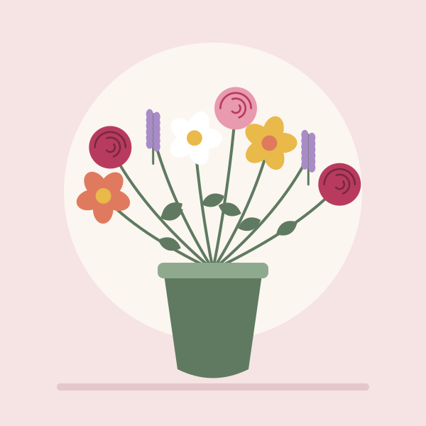

Bouquet du marché
Renoncules, marguerites et brins de lavande, au gré des arrivages.
35 €
Artisan fleuriste à Blois depuis 1998
Bouquets du marché, roses anciennes et compositions champêtres : chaque semaine, Madame Roussel choisit les plus belles fleurs des producteurs de la région.

Trois compositions renouvelées chaque lundi, en taille moyenne. Livraison possible le jour même à Blois.
Renoncules, marguerites et brins de lavande, au gré des arrivages.
35 €

Roses parfumées d'un rosiériste de Touraine, en camaïeu de framboise.
45 €

Fleurs des champs, lavande et feuillages, comme une promenade en bord de Loire.
39 €

Achetées chez des producteurs du Loir-et-Cher et de Touraine.

Pour toute commande passée avant midi, dans Blois et ses environs.

Chaque bouquet est unique et emballé dans du papier recyclé.

Un samedi par mois, Madame Roussel partage ses gestes de fleuriste. Vous repartez avec votre composition.
Six participants au maximum
Fleurs et matériel fournis
45 € par personne